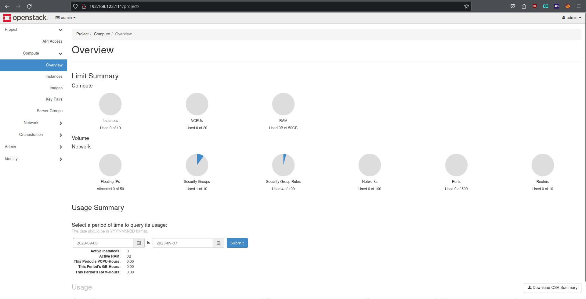
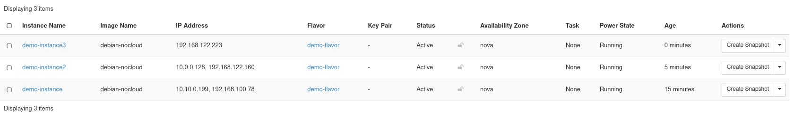
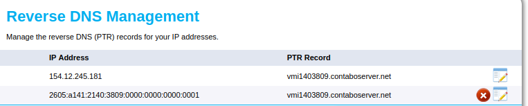
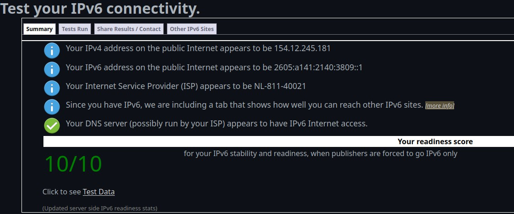

Building my own Server Part 2 — Software
STATUS: see part 3, where I don’t start with openstack.
I have other stuff to do that needs my server working, and since I already have remote libvirt setup, I will just stick to that for now.
But I don’t think I am giving up on openstack, since what I want seems to be possible, just very difficult.
Software
Software Suite
I want an easy install, but I also want lots of features. Here are some things I have looked at:
- Proxmox VE
- Xen Orchestra
- Openstack
- Canonicals LXD UI
- Ovirt
- Harvester
- OpenVZ
Openstack
Currently, openstack appeals to me a lot. Although I originally wanted to do a bare metal install, I now realize that that is too time consuming and not realistic, so I am most likely going to use one of the automated methods of installation.
They have an easy deployment guide for an all in one node, perfect for my single server.
I will definitely not use every service, but I do want to use openstack because of the sheer number of services it offers. Openstack offers every single feature of other virtualization platforms, at the cost of complexity. Here are the features that made me decide I needed that complexity.
Skyline/Horizon
Openstack has a previous generation web ui, horizon, and a newer generation web ui, skyline. These web ui’s offer all the features of other web based virtualization platforms like proxmox, but they also let you configure the other things of openstack.

And they have some special features, like giving you a visual layout of network topology.

Multi tenancy.
The most important feature of openstack, in my opinion, is it’s multi tenant architechture. Unliek proxmox, which is designed for a single organization, openstack is designed in such a way that you can create extra users, which get their own allocation of resources.
So when I go to college, if anyone wants a VPS to play around in, I can just allocate them a few resources, and then they get their own web ui for playing with servers and networking.
Many public cloud services are actually using openstack in the background for it’s public tenant architecture. Openstack’s dashboards can be rebranded to be your own company:

Bare metal nodes
Openstack saves a lot of trouble by immensely abstracting almost all the manual work that goes into putting together a modern cloud.
It takes it a step further, with it’s ability to treat physical, bare metal machines, as virtual machines, even automating the provisioning the same way you can do so for a virtual machine.
The docs make it sound complex, but it really isn’t all that. By leveraging the nova component of openstack, which abstracts the backend drivers of virtual machines (qemu-kvm, xen, or even hyper-v) can be used as backend drivers for nova.
However, when combined with ironic openstack’s service to configure bare metal nodes, nova can also use bare metal as a driver for compute nodes. This integrates further with services like magnum…
Magnum
Magnum is openstack’s kubernetes-as-as-service. It provisions nodes using nova, with kubernetes clusters.
Now here is where I get greedy. Do I need kubernetes? No. Will kubernetes even be useful on a single server setup? No. Do I want kubernetes? Yes.
Here is a video demonstration, where someone uses the web ui to create a cluster using magnum.
In addition to that, because openstack magnum uses openstack heat, which provisions nodes from templates, it can be used to do things like auto install nvidia drivers and container runtime.
This video is a bit outdated, so heat and magnum are much more mature since then, and have only gained more features.
Api and Automation
Openstack is designed from the ground up to be a cloud. It has first class support for their api, and everything that can be done from the UI can also be done from either the command line, or the api.
This advanced api makes it easier for other software to interact with openstack. For example, the rancher kubernetes cluster manager supports openstack as a cloud provider. It is capable of requesting nodes, provisioning them, and then setting up a kubernetes cluster entirely from the rancher web gui.
Zun
Openstack zun is the container service for openstack. It doesn’t run them in virtual machines, but instead directly on metal. It’s likely that when I want to run containerized services for actual usage, this is what I will be using instead of kubernetes since I will be using a single server, and thus won’t be able to get the benefits of kubernetes. The benefit I see form using containers is that because I have an nvidia desktop gpu, I won’t be able to use vgpu, a feature that lets you divide the gpu between virtual machines. However, containers have no such limitation.
Installing Openstack
I’ve decided to use the kolla-ansible project to install openstack. It works by using ansible to deploy docker containers, which the openstack services run in.
They have a quickstart guide:
https://docs.openstack.org/kolla-ansible/latest/user/quickstart.html
And the ansible playbook can be found here:
https://opendev.org/openstack/kolla-ansible
And they provide a sample ansible inventory for the all in one node.
I do not need all of those features. I pretty much just want virtualized compute, networking, containers, and kubernetes. I don’t need things like an S3 compatible block storage, a relational database, or an app store. Okay, but maybe I want them.
I will do more research into what I want and what I don’t want, and edit the ansible playbook accordingly.
However, this method of deployment seems to require two NIC’s (network interface cards). I think I have both, but just in case, I noted another method of deployment, openstack ansible (yeah the naming isn’t the greatest), which deploys openstack without using containers, it actaully installs and configures the services on the host operating system.
The openstack ansible All in one deployment, doesn’t seem to have the same requirement of two NIC’s, which I do have.
Operating system
But first, I do need to select on an operating system. Openstack is flexible and versatile, and it can be installed on multiple operating systems.
I was originally going to choose a RHEL compatible distro, but then RHEL made changes put the status of those in limbo.
I am currently deciding between:
- Ubuntu
- Debian
- RHEL (via a developer subscription)
- A RHEL rebuild
- Rocky Linux
- Alma Linux
- One of the academic distros, like scientific linux
- Centos Stream
The important thing is that it’s a stable release distro with automatic updates. I don’t want to have to do too much manual maintainence. Ideally, I also want this distro to have newerish packages, in case I want to do some tinkering with the underlying OS, and I also want the distro to have a stable release that goes on for longer than my college years. From what I’ve heard, upgrading from one release of an OS to another can be a frustrating process, and I don’t want to have to do this while I’m in the middle of school.
The RHEL rebuilds do appeal to me, but they also come with extra complications, like selinux that I don’t really want to have to deal with.
But after much deliberation, I’ve decided on Rocky Linux. Rocky Linux 9 is officially supported by kolla ansible. In addition to that, Rock Linux 9 will be supported for a good deal of time, with the release being officially supported for 3 years and a bit, and that release will continue to receive security updates for 5 more years after that. More than enough to last me through college.
The install was very simple. I thought I would experience issues because of the Nvidia GPU, as I had been having issues with graphical monitor output with other distros, but I didn’t. A GUI appeared for me, and the install process was exceedingly simple, even simpler than debian or other distros I’ve tried. Of course, the disadvantage was that I couldn’t configure everything, like there was no option to set up users other than root, but it was very quick.
Now, I have RHEL installed.
To make management easier, I will install my favorite web administration system, cockpit. This will also enable me to do remote management operations with a gui, things like partitioning the disks.
Now that I have rocky linux installed, I can install openstack using kolla-ansible.
Kolla-ansible
I will be following the quick start guide
I will briefly go over what I am doing here, edited for my usecase. The first few steps are copy and pasted from the guide linked above.
sudo dnf install git python3-devel libffi-devel gcc openssl-devel python3-libselinuxpip install 'ansible>=6,<8'pip install git+https://opendev.org/openstack/kolla-ansible@mastersudo mkdir -p /etc/kolla
sudo chown $USER:$USER /etc/kollacp -r /home/moonpie/.local/share/kolla-ansible/etc_examples/kolla/* /etc/kollacp /home/moonpie/.local/share/kolla-ansible/ansible/inventory/all-in-one /home/moonpie/Now, this is the initial setup. I need to customize these things to my liking.
Usernames and passwords a are easy, but I need to make sure the networking is right, especially since my setup will be so unorthodox. Because I am setting this up on my home network, I won’t have public internet access, as my router using NAT
Router Networking
It requires that I set my two network interfaces to two things: default network interface for everything else, and the neutron external interface.
The neutron external interface can be any physical interface, but internally, it is referred to as br-ex. This interface is responsible for letting the virtual machines interact with the internet.
Anyway, I had a spare router lying around, and I flashed it with freshtomato for some more advanced features. I hooked it up to my existing router, so it would be behind NAT, but now I have extra ethernet ports, so I can have a private subnet with my laptop, and the openstack stuff.
I was curious if tomato offered an easy way to expose services to the internet, from behind NAT, something like integration with Cloudfare’s tunnels, but they didn’t.
However, another idea has occured upon me: Why not just host the public parts of openstack… on the public. I could rent a VPS, and host openstack neutron, and maybe the openstack dashboards on the public.
For example, my current vps provdider webdock, gives out a range (/124) of ipv6 addresses, 16 total. Based on the pricing on that page, 1.75 Euros for an additional ipv4 address, I think I can safely assume that ipv4 addresses are more expensive, out of what I am wiling to spend, because of their scarcity.
However, if I can install openstack neutron on a cheap vps, thenH I will be able to give public ipv6 access to the virtual machines, which sounds like a very neat setup.
Since my home server won’t have public internet access I am guessing I have to start by creating a virtual network that links the two machines together, that way they can see eachother and cluster.
Openstack has some interesting diagrams: https://docs.openstack.org/install-guide/environment-networking.html. But I can’t find anything conclusive.
Since I have a router running tomato, I am thinking that I can vpn the entire router into the other machine, so that the vps I am accessing can access everything in the tomato subnet, meaning I won’t have to configure the server itself. The downside is that everything will be vpn’ed, but with a 4 TB upload limit, I’m not too concerned about that right now.
But sadly, webdock seems to be sold out of kvm vps’s, which have better compatibility with docker, so I will probably go looking for another platform.
Anyway, tomato seems to have a wireguard client installed, so I will use that, since wireguard is the fastest vpn client/server available. I found a nice guide on setting up pure wireguard. However, it doesn’t discuss connecting the subnet of a router to the vps. I did find another guide that did. Now this guide is older, and some people criticized it for various reasons. However, it does tell me the name of what I am looking for: Site to site.
I found a much simpler guide on ubuntu’s website. Rather than A-B-C, I only need the A-B which this offers. In addition to that, there are no iptables rules on this guide.
The minimum specs required for openstack neutron are: ???. The docs suck.
VPS provider overview:
| Name | CPU | Ram (GB) | Price (/month) | Ipv6 | OS |
|---|---|---|---|---|---|
| Contabo | 4 | 8 | $10.29 | 18 quintillion | Rocky |
Okay, contabo wins. I was gonna do an actual comparison between multiple vps providers, but contabo has great specs, and it is trusted by people when I have asked around.
I don’t want to spend money, but this is a nice deal.
Also, contabo offers 32 TB out, and unlimiited in. This is definitely a very good choice.
After visiting https://test-ipv6.com/ and realizing that my home residential wifi does not have ipv6 enabled by default (although there is an option in the router settings), I realize that the college dorms may not have ipv6 support. In that case, vpning into the remote server, which does have ipv6 support, would give me ipv6 support.
Now that I have a vps, I am trying to get wireguard working, by testing with my laptop I started out with the guide from ubuntu, but that doesn’t work. In addition to not having access to subnets I can only access on my laptop from my server, not even the vpn is working correctly:
moonpie@lizard:~> curl --interface wgA ifconfig.me
curl: (7) Failed to connect to ifconfig.me port 80 after 1 ms: Couldn't connect to serverI found another guide but yet again, it’s another A-B-C guide.
I found a promising stackexchange answer with an interesting commmand I have tried:
ip route add 192.168.122.0/24 via 10.10.9.0 dev wgBWhere the 192.168.122.0/24 is the subnet I am trying to expose.
Okay, at this piont, I understand what I want to do pretty well. I think I will use the A-B-C guides as a template, except I only need A-B, and the router needs to eb the device that is configured not to have a permanent, static ip address, like the clients are.
I got lucky when I was browsing lemmy, and I found forum comment related to my exact issue, which then links to a stackexchange question, in which the top answer uses information they sourced from this guide
I attempted to follow the latter guide, using a simple setup. My laptop, would be my “router”, and I was attempting to expose the vlan subnet created by the libvirt virtual machine manager to my remote server, a vps hosted on contabo.
Ironically, I got the connection to work, but in the wrong direction. My vps could ping my remote server, but my remote server could not ping the virtual machines on my laptop. Interestingl, it could ping my laptop using the ip of the virbr0 virtual network adapter that libvirt creates for a vlan.
I’m guessing that this didn’t work because I’m doing this somewhat backwards, with the device that the
I am guessing because I am doing this somewhat backwards, where the device exposing the lan is behind nat, whereas it is the other way around in the guides that I have seen.
root@vmi1403809 ~]# ping 192.168.122.1
PING 192.168.122.1 (192.168.122.1) 56(84) bytes of data.
64 bytes from 192.168.122.1: icmp_seq=1 ttl=64 time=46.5 ms
[root@vmi1403809 ~]# ping 192.168.122.201
PING 192.168.122.201 (192.168.122.201) 56(84) bytes of data.
From 10.10.9.0 icmp_seq=1 Destination Port UnreachableThe first is the ip address of my laptop, and the second is the ip address of my debian virtual machine, which is running on my laptop.
moonpie@lizard:~/vscode/moonpiedumplings.github.io> curl --insecure http://192.168.122.201:9090
<html><head><title>Moved</title></head><body>Please use TLS</body></html>
moonpie@lizard:~/vscode/moonpiedumplings.github.io> curl --insecure http://192.168.122.201:9090 --interface wgA
curl: (7) Failed to connect to 192.168.122.201 port 9090 after 0 ms: Couldn't connect to serverCurl has a feature to bind to a specific interface, and when I try to test a connection using the wgA interface, it can’t connect. At first, I’m annoyed, but in hindsight, this makes sense. Only through the virbr0 interface, can I access the virtual machiens. And the virtual machines, are actually behind their own NAT. They are not public, so why would I be able to ping them?
Libvirt offers several networking options. Bridged is where all virtual machines get public ip addresses. Routed is similar, but they don’t get their own interface, and it works on wirelessly connected devices. And finally, NAT, what I am using does not give virtual machines publicly accessible ip addresses.
Instead of running it on my actual laptop, I will try to run the vpn on the debian virtual machine instead.
I set up wireguard again, one side on the vps I am renting:
/etc/wireguard/wgB.conf
[Interface]
Address = 10.10.9.1/31
PostUp = wg set %i private-key /etc/wireguard/%i.key
ListenPort = 51000
[Peer]
# alpha site
PublicKey = e763iTZmmMcx7HufUOi5vzmQJ5ZhYBuuqnXh/2ViBjA=
AllowedIPs = 10.10.10.0/24,10.10.9.0/31,192.168.122.0/24And another side on my virtual machine:
/etc/wireguard/wgA.conf
[Interface]
Address = 10.10.9.1/31
PostUp = wg set %i private-key /etc/wireguard/%i.key
ListenPort = 51000
[Peer]
# alpha site
PublicKey = e763iTZmmMcx7HufUOi5vzmQJ5ZhYBuuqnXh/2ViBjA=
AllowedIPs = 10.10.10.0/24,10.10.9.0/31,192.168.122.0/24And the wireguard default route didn’t work, so I removed it, and then added the route manually using the ip route tool.
When everything was done, my VPS could ping the ip address of my virtual machine, but not my laptop.
[root@vmi1403809 ~]# ping 192.168.122.201 # virtual machine ip
PING 192.168.122.201 (192.168.122.201) 56(84) bytes of data.
[root@vmi1403809 ~]# ping 192.168.122.1 # laptop ip
PING 192.168.122.1 (192.168.122.1) 56(84) bytes of data.
# it just sits here forever.Well, this is better than a strange error. However, I don’t know where to go next from here.
Alright, I figured it out. I’ve sourced my information from two different links:
The instructions for wg-quick I used are in the arch wiki’s wireguard article.
However, I also needed to look at the arch wiki’s NAT article. From that article, if you have docker enabled, you must take some extra steps that make thigns more complex. So I disabled docker, followed the instructions for NAT there.
And on my remote server, I ran ip route add xx.xx.xx.xx/yy via zz.zz.zz.zz where xx is the subnet you want to access remotely, and zz is the ip address of the remote device with access to that subnet.
Anyway, I find this deeply ironic. I originally wanted to deploy wireguard to my router to avoid any kind of complex networking, but because I didn’t have physical access to my router, I was testing on machines with more complex networking, which caused things to not work. This affirms my decision to set up wireguard on my router, rather than on my server, especially since kolla-ansible uses docker to deploy.
Anyway, I will have to look into split tunneling or whatnot, because I may not want to vpn everything.
The freshtomato wiki contains info on how to configure wireguard, including doing things like having it start on boot.
Sadly, the wg-quick command doesn’t seem to be available on the router, but that’s not really a big deal. I can just write a small script which sets this up, using the instructions from the arch wiki article, or even just using wg-quick, because it tells you what steps it is taking to up the wireguard interface.
Here is the wg-quick file on my server:
[Interface]
Address = 10.10.9.1/31
PostUp = wg set %i private-key /etc/wireguard/%i.key
ListenPort = 51000
[Peer]
# alpha site
PublicKey = e763iTZmmMcx7HufUOi5vzmQJ5ZhYBuuqnXh/2ViBjA=
AllowedIPs = 10.10.10.0/24,10.10.9.0/31,192.168.122.0/24Interestingly, I didn’t have to add a specific route using ip. Once nat is set up correctly on one device, the, it somehow knows where to go. I only need to add allowed ips.
Here is configuration file for my “router” (still just testing with virtual machines).
/etc/wireguard/wgA.conf
[Interface]
PreUp = sysctl net.ipv4.ip_forward=1
PreUp = iptables -t nat -A POSTROUTING -o enp1s0 -j MASQUERADE
PreUp = iptables -A FORWARD -m conntrack --ctstate RELATED,ESTABLISHED -j ACCEPT
PostUp = wg set %i private-key /etc/wireguard/%i.key
PostUp = iptables -A FORWARD -i %i -o enp1s0 -j ACCEPT
Address = 10.10.9.0/31
ListenPort = 51000
[Peer]
# Remote Server
PublicKey = pxCx+cEs6hoI4EE+XdE4lQiLkJRbG4JGQwXz6d/hZDM=
AllowedIPs = 10.10.9.0/31
Endpoint = <VPS IP>:51000
PersistentKeepalive = 25Here are the steps my “router” takes when I use wg-quick up wgA
root@debian:/home/moonpie# wg-quick up wgA
[#] sysctl net.ipv4.ip_forward=1
net.ipv4.ip_forward = 1
[#] iptables -t nat -A POSTROUTING -o enp1s0 -j MASQUERADE
[#] iptables -A FORWARD -m conntrack --ctstate RELATED,ESTABLISHED -j ACCEPT
[#] ip link add wgA type wireguard
[#] wg setconf wgA /dev/fd/63
[#] ip -4 address add 10.10.9.0/31 dev wgA
[#] ip link set mtu 1420 up dev wgA
[#] wg set wgA private-key /etc/wireguard/wgA.key
[#] iptables -A FORWARD -i wgA -o enp1s0 -j ACCEPTIn this case, wgA is the wireguard interface, and enp1s0 is the interface I want to configure NAT on, so that I can access the subnet behind it.
Actually, wg-quick appears to just be a bash script, and I might be able to transfer that over to freshtomato.
The best feature of this wireguard setup is that, since it doesn’t route everything through the vpn tunnel like I was initially expecting, meaning I won’t have to worry about bandwidth or speed, since I won’t be routing all traffic through my router to a remote router.
In addition to all this, I can use nmap to make sure that my remote server can actually see the other services, as they are behind a kind of NAT.
root@vmi1403809 wireguard]# nmap -sV 192.168.122.1
Starting Nmap 7.91 ( https://nmap.org ) at 2023-08-18 11:29 PDT
Nmap scan report for 192.168.122.1
Host is up (0.068s latency).
Not shown: 997 closed ports
PORT STATE SERVICE VERSION
53/tcp open domain dnsmasq 2.89
8000/tcp open http SimpleHTTPServer 0.6 (Python 3.11.4)
9090/tcp open ssl/zeus-admin?
1 service unrecognized despite returning data. If you know the service/version, please submit the following fingerprint at https://nmap.org/cgi-bin/submit.cgi?new-service :
SF-Port9090-TCP:V=7.91%T=SSL%I=7%D=8/18%Time=64DFB8E1%P=x86_64-redhat-linu
...
... For some reason nmap can't detect cockpit so it's just 20 lines of this nonsense.
...
20\x20\x20\x20\x20\x20}\n
SF:\x20\x20\x20\x20\x20\x20\x20\x20p\x20");
Service detection performed. Please report any incorrect results at https://nmap.org/submit/ .
Nmap done: 1 IP address (1 host up) scanned in 186.81 secondsNmap detects my python http server, and cockpit.
Alright, next I want to configure firewall usage. I don’t want the remote wireguard server to have access to everything on my “home” network. I am likely going to do this by creating vlan’s, which can be wifi, by creating virtual wireless, or ethernet, by making it so that certain ethernet ports are trapped in a vlan. With this setup, I can ensure that my server is kept isolated from the rest of my devices, in case it gets compromised. (Although doing it this way is kinda pointless since I may be using a VPN on my devices, running through that same server to get around college wifi restrictions, if they exist).
So I setup wireguard on my server:
/etc/wireguard/wg-stack.conf
[Interface]
Address = 10.10.11.1/24
PostUp = wg set %i private-key /etc/wireguard/%i.key
ListenPort = 51000
[Peer]
# My router
PublicKey = mFyQQk8/w7AhLSEtJKkcNhMNLPcyBMFHu02TI+OUj2Y=
AllowedIPs = 10.10.11.0/24,192.168.17.0/24And here is the wg-stack.sh script that will be run on my router:
wg-stack.sh
# enabled by default
#echo 1 > /proc/sys/net/ipv4/conf/br2/forwarding
#iptables -t nat -A POSTROUTING -o br2 -j MASQUERADE
#iptables -A FORWARD -m conntrack --ctstate RELATED,ESTABLISHED -j ACCEPT
modprobe wireguard
ip link add wg-stack type wireguard
wg setconf wg-stack /jffs/wg-stack-setconf
ip -4 address add 10.10.11.0/24 dev wg-stack
ip link set mtu 1420 up dev wg-stack
iptables -A FORWARD -i wg-stack -o br2 -j ACCEPTSome of the rules were enabled by default, so I commented them out.
And here is the wg-stack-setconf file that the above script calls upon:
/jffs/wg-stack-setconf
[Interface]
PrivateKey = NO
#Address = 10.10.0.0/24
ListenPort = 51000
[Peer]
# Contabo VPS
PublicKey = xO2fVY8uh4SDx5VH+24Mxx+WIXSnfY3Vw9CDBW7cMnY=
AllowedIPs = 10.10.11.0/24
Endpoint = <VPS IP>:51000
PersistentKeepalive = 25I have to manually specify the private key, because the wg setconf can’t run abitrary commands.
This works… one way.
root@unknown:/jffs# ping 10.10.11.1
PING 10.10.11.1 (10.10.11.1): 56 data bytes
64 bytes from 10.10.11.1: seq=0 ttl=64 time=43.491 ms
root@unknown:/jffs# curl 10.10.11.1:8000
<!DOCTYPE HTML PUBLIC "-//W3C//DTD HTML 4.01//EN" "http://www.w3.org/TR/html4/strict.dtd">
<html>
....
.... I ran a simple http server to test if my router could see ports of my server.
....
</html>However, when my server attempts to ping or curl my router, it simply waits forever. I think this may have something to do with firewalll rules, where the router is refusing to respond to even ping connections.
After doing some more research, it appears my iptables rules deny all connections to my router, and I can attempt to access subnets other than my router itself, but they just redirect to my router:
[root@vmi1403809 ~]# ping 192.168.17.152
PING 192.168.17.152 (192.168.17.152) 56(84) bytes of data.
64 bytes from 192.168.17.152: icmp_seq=1 ttl=63 time=41.9 ms
[root@vmi1403809 ~]# curl 192.168.17.152:8000
curl: (7) Failed to connect to 192.168.17.152 port 8000: No route to host
[root@vmi1403809 ~]# nmap -sV 192.168.17.152
Starting Nmap 7.91 ( https://nmap.org ) at 2023-08-19 20:18 PDT
Nmap scan report for 192.168.17.152
Host is up (0.043s latency).
Not shown: 999 filtered ports
PORT STATE SERVICE VERSION
22/tcp closed ssh
Service detection performed. Please report any incorrect results at https://nmap.org/submit/ .
Nmap done: 1 IP address (1 host up) scanned in 5.53 secondsThe nmap scan is especially strange, considering I am using my laptop to test, which doesn’t have an ssh server running. My router however, does, but it also has an http server running (the web management interface), which nmap doesn’t seem to see. I am guessing my router is not playing the role of NAT properly.
Nope, I was wrong. The problem was not my router firewall, but rather my computer firewall. I forgot that unlike Arch Linux, the Arch Linux based linux distribution I was using, CachyOS did come with a firewall enabled.
After disabling the firewall:
[root@vmi1403809 ~]# nmap -sV 192.168.17.152
Starting Nmap 7.91 ( https://nmap.org ) at 2023-08-20 03:21 PDT
Nmap scan report for 192.168.17.152
Host is up (0.042s latency).
Not shown: 999 closed ports
PORT STATE SERVICE VERSION
8000/tcp open http SimpleHTTPServer 0.6 (Python 3.11.4)
Service detection performed. Please report any incorrect results at https://nmap.org/submit/ .
Nmap done: 1 IP address (1 host up) scanned in 7.78 secondsFor testing purposes, I run a simple http server using python -m http.server which launches this service in port 8000.
Alright, upon later investigation, it appears I was both right and wrong.
The iptables -A FORWARD -i wg-stack -o br2 -j ACCEPT only accepts forwarded packets, giving it access to devices in the br2 vlan, whereas input in the one that makes it respond to ping probes or show servcies. This is actually good, because my router won’t be exposed to my rented server, only the subnet behind it will. Without a policy to accept input packets, the router won’t even respond to ping probes.
However, I do have one final thing to handle:
root@unknown:/jffs# ./wg-stack.sh
RTNETLINK answers: Network is unreachableHowever, when I run all the steps individually, this error doesn’t occur. This error occurs when I run the ip link set mtu 1420 up dev wg-stack, before the previous step in the script, assigning the ip address to the interface, isn’t done. I am guessing that the script runs too quickly, and some steps are run before the previous step is complete. I simply need to add a sleep command, which inserts an artificial wait in the process.
With all said and done, here is the script I have placed on my router:
/jffs/wg-stack.sh
modprobe wireguard
sleep 2s
ip link add wg-stack type wireguard
sleep 2s
wg setconf wg-stack /jffs/wg-stack-setconf
sleep 2s
ip -4 address add 10.10.11.0/24 dev wg-stack
sleep 3s
ip link set mtu 1420 up dev wg-stack
sleep 2s
iptables -A FORWARD -i wg-stack -o br2 -j ACCEPTAnd following the advice of the freshtomato wiki, I have placed this script in the firewall section:
until [ $(ping -c 1 -A -W 5 -q google.com &>/dev/null && echo 1 || echo 0) -eq 1 ]; do sleep 5; done; /jffs/wg-stack.sh
On my remote server, I can simply enable the wg-quick service
systemctl enable wg-quick@wg-stack
And now wireguard will be started automatically on both my router and the server.
Because my home server, is not accessible to the internet, I must proxy the connection through the contabo vps before I can get in. My ssh config uses the ProxyJump feature to proxy the connection from one vps into another.
~/.ssh/config
Host moontron
HostName VPS IP
port 22
user root
IdentityFile /home/moonpie/.ssh/moontron
Host moonstack
Hostname 192.168.17.197
port 22
user root
IdentityFile /home/moonpie/.ssh/moonstack
ProxyJump moontronWith this, I can ssh into my moonstack machine from anywhere in the world.
And because ansible can read the ssh config, I can simply plug the host nicknames into my ansible inventory, and my ansible can configure them, from anywhere in the world.
VPS Networking
Of course, this now makes my kolla-ansible installation more complex. Because I have now have two servers, to distribute to, and I also to deal with having to wireguard into my servers in order to be able to ssh into them.
Beyond that, I have switched from a single node installation, to a multi node installation.
Now that I have ssh and networking set up, I need to select the features and functions of my nodes.
Kolla-ansible sorts nodes into 4 types.
- Control: These run the dashboards, api and the like.
- Networking: This runs the loadbalancers, virtual networking, and the like
- Compute: VM’s and containers are hosted here
- Storage: Various types of storage are on this node.
From the the kolla-ansible globals:
# This is the raw interface given to neutron as its external network port. Even
# though an IP address can exist on this interface, it will be unusable in most
# configurations. It is recommended this interface not be configured with any IP
# addresses for that reason.
#neutron_external_interface: "eth1"Based on this, it appears that if I attempt to use the singlular ethernet interface on my vps, then I will end up breaking my setup, as that ethernet interface will stop working normally.
I found something interesting on the openstack docs. Apparently, this setup is possible, but “non trivial” to set up persistently, however, it is automated by Kayobe.
I went through kayobe’s documentation, and found a youtube tutorial, and the deployment looks to be much more complex than kolla-ansible, which is frustrating to discover.
Despite Kolla-ansible’s claims of creating a bridge interface and virtual ethernet’s persistently being “non-trivial”, I think they are easier to set up than the alternative options available me.
Both openstack-ansible, and kayobe, simply aren’t as well documented. So it’s back to networking.
I found a useful article from Red Hat, which is a very good overview of what virtual network interfaces I have available to me on a modern linux sysytem.
The two that it looks like I need to pick, are either macvlan, or bridge mode. Both of those modes allow you to create virtual ethernet interfaces
Macvtap
Because Rocky Linux uses networkmanager, I will use the nmcli tool to do stuff.
nmcli connection add type macvlan dev enp1s0 mode bridge tap yes ifname macvtap0
....
ip a
....
4: macvtap0@enp1s0: <BROADCAST,MULTICAST,UP,LOWER_UP> mtu 1500 qdisc fq_codel state UP group default qlen 500
link/ether 56:19:3c:7a:b7:e5 brd ff:ff:ff:ff:ff:ff
inet 192.168.122.78/24 brd 192.168.122.255 scope global dynamic noprefixroute macvtap0
valid_lft 3344sec preferred_lft 3344sec
inet6 fe80::2c2:9892:c942:1fec/64 scope link noprefixroute
valid_lft forever preferred_lft foreverThis simply creates a device and all, which is able to get ip’s from the external world, and in this case, the parent ethernet interface can still be used normally.
You can disable automatic configuration of ipv4/v6 with
nmcli connection modify macvlan-macvtap0 ipv6.method "disabled"
nmcli connection modify macvlan-macvtap0 ipv4.method "disabled"Which I will probably need, as I won’t be paying for another ipv4 address.
The nice thing about using NetworkManager is that configuration using NetworkManager is persistent across reboots. Although I don’t want to jump to conclusions, it’s possible that “non-trivial to set up in a persistent manner” is based on older information.
I further expermimented with macvlan. Since openstack will probably be doing more advanced networking, I attempted to create another macvtap device with the parent being the already existing macvtap device. It got created, but it didn’t get internet access, nor did it automatically get it’s own ip address. I don’t know what this means when it comes to how openstack neutron will interact with it, as neutron may want to do something like that.
I found a wordpress blogpost archive. In this blog, someone uses the openvswitch to create a bridge, in the necessary setup for neutron to be able to do stuff.
Based on what that setup looks like, it doesn’t look like neutron is given an interface that is a slave to the bridge, but it looks like an interface which is under the bridge is created for my machine to use normally, while neutron consumes the bridge itself for usage and creation of more virtual interfaces. However, this guide is for deploying openstack neutron on bare metal, and kolla-ansible works by deploying in docker containers.
I found another relevant doc on the openstack website, about using creating an all in one node using vlan’s, bridge interfaces. If I can figure out how do do this in networkmanager, I think it will actually work
The eth0.10 format creates a tagged vlan interface.
I found a relevant document devstack with a single NIC. Devstack is a way of testing openstack for development purposes and it seems that they’ve anticipated that people deploy openstack from devices like a laptop, which only have one NIC. Their method involves using Open vSwitch to create a bridge, making the main ethernet interface a slave to the bridge, and then configuring the bridge accordingly, giving the new slave an ip address, and using that.
However, I am still confused. The docs make it unclear: Do I give neutron a veth to use for it’s purposes, and use the bridge for network access, or do I give it the bridge, and use the veth created on the bridge to get internet connectivity for myself?
Based on the earlier linked devstack article, it looks like it’s not a linux bridge that’s created, but a openvswitch bridge that’s created, and then something akin to a veth is given to the host device to use for normal networking. However, kolla-ansible doesn’t seem to make this kind of setup too easy…
I did some testing, and I was able to add a macvtap interface on a veth interface.
nmcli connection add type macvlan dev veth1 mode bridge tap yes ifname macvtap0
Connection 'macvlan-macvtap0' (d2ea3d24-f831-4508-b2cf-c448e64afe2a) successfully added.
[moonpie@cachyos-x8664 moonpiedumplings.github.io]$ ip a
... irrelevant stuff omitted.
7: macvtap0@veth1: <BROADCAST,MULTICAST,UP,LOWER_UP> mtu 1500 qdisc fq_codel state UP group default qlen 500
link/ether 66:4b:2e:a7:22:f2 brd ff:ff:ff:ff:ff:ff
inet 192.168.17.251/24 brd 192.168.17.255 scope global dynamic noprefixroute macvtap0
valid_lft 86395sec preferred_lft 86395sec
inet6 fe80::5541:1541:5340:ebbc/64 scope link noprefixroute
valid_lft forever preferred_lft forever
[moonpie@cachyos-x8664 moonpiedumplings.github.io]$ curl google.com --interface macvtap0
<HTML><HEAD><meta http-equiv="content-type" content="text/html;charset=utf-8">
<TITLE>301 Moved</TITLE></HEAD><BODY>
<H1>301 Moved</H1>
The document has moved
<A HREF="http://www.google.com/">here</A>.
</BODY></HTML>
[moonpie@cachyos-x8664 moonpiedumplings.github.io]$ Putting a macvtap interface on a veth interface shows that veth interfaces are more versatile than macvtap interfaces, able to do things like allocate more ip address to sub interfaces.
So the next test is to see if I can put a bridge interface on a veth interface. If I can put a bridge interface on a veth interface, than openstack neutron can put a bridge interface on a veth interface, meaning I can simply give neutron a veth to consume.
I attempted to add a bridge with the veth1 interface as a port, but the bridge sits forever on “configuring ip”.
So based on this experimentation, it seems as if that linux bridge is used as the main one.
There doesn’t appear to be a way to use an existing linux bridge as neutron’s interface, at least not with kolla-ansible. But this does give me a funny idea: what if I install kolla-ansible, lose network connectivity, and then use VNC access to the VPS to finish the configuration manually?
I don’t think this would work though. I can’t guarantee that network connectivity will be maintained for the entirity of the setup, and if the connection was broken halfway through, then the entire thing could shatter.
Based on the kolla docs and the git repo, it seems like kolla-ansible does support linuxbridge.
So I have two options: nested bridges, or setting up the main bridge and giving it to openstack, or somehow configuring the main openstack bridge in the middle of the install. I could modify the ansible playbooks to add the necessary veth interfaces in the middle of the install, but the issue is that kolla-ansible deploys everything in docker, and from a cursory look through, I can’t immediately figure out how to configure stuff outside the docker containers.
The next thing I will try is having a macvtap interface be a port of a bridge, as I haven’t tried that yet. If it works, I can play with the bridge, and see if I can do the veth interface trick, but rather than on a normal bridge, on a bridge that’s on a macvtap interface.
I did further testing with macvtap. On a debian libvirt virtual machine, using the NAT networking in order to make testing easy, I created a a macvtap interface and then plugged it into a bridge. However, it sat at “configuring ip” forever. But, if I manually assigned it an ip, then I could access it remotely, like from the host machine, from the bridges new ip, but I couldn’t do the reverse. Ping and curl, when asked to use that interface, didn’t work.
I am wondering if this is a firewall issue. Maybe packet forwarding by sysctl or iptables isn’t enabled?
I attempted to add a veth interface to the bridge that has macvtap as a port. Same as the bridge, dhcp and auto configuring ip didn’t work, but I could give it what I believed to be a static ip — except I couldn’t access this static ip, or send stuff through it.
A bridge under macvtap doesn’t appear to work fully.
What about a bridge under a bridge? I created a bridge, plugged a veth into it, and made the veth on the other end a port of a new bridge. Rather than let it sit on “configuring ip”, I gave it a static ip. Same issue… until I ran:
root@debian:/home/moonpie# iptables -I DOCKER-USER -j ACCEPT
root@debian:/home/moonpie# curl google.com --interface bridge1
<HTML><HEAD><meta http-equiv="content-type" content="text/html;charset=utf-8">
<TITLE>301 Moved</TITLE></HEAD><BODY>
<H1>301 Moved</H1>
The document has moved
<A HREF="http://www.google.com/">here</A>.
</BODY></HTML>
root@debian:/home/moonpie# In this case, bridge0 is my primary bridge, and bridge1 is the “bridge under the bridge”. I added an iptables rule to accept EVERYTHING, and it worked, making me think that the firewall is the issue for macvtap/lan as well.
I attempted to create a veth interface attached to the bridge interface, and I was suprised to see that it already got it’s own public ip. So apparently, it was iptables getting in the way. However, an iptables policy of “literally accept everything” isn’t very secure, so I need to isolate the necessary rules to have a nested bridge work.
I am guessing that it’s probably something related to packet forwarding, and I need to configure iptables to happily send the packets from a difference ip through the main bridge without touching them.
Alright, so after creating a macvtap interface, I realize something: it can send requests out, but I can’t actually access it.
Bridge + Veth
I experimented with bridges. Using cockpit’s networkmanager configuration allows you to seamlessly create a bridge which you can still use as a normal ethernet interface for some reason. It even preserves existing ip configuration. But gives me an unanswered question: If bridges are more featureful by default, and can also be used for normal connectivity, why not always use a bridge? More features are better, right?
Anyway, I was able to create a veth pair, enslave one to the bridge, and then the nonenslaved veth interface could be used as a normal ethernet interface.
Steps:
Use cockpit-networkmanager to create a bridge, and add the ethernet interface as a port.
sudo ip link add veth0 type veth peer name veth1
sudo ip link set veth0 master br0
sudo ip link set veth0 up
sudo ip link set veth1 up
sudo nmcli connection add type ethernet ifname veth1 con-name veth1
sudo nmcli connection up veth1And then that interface can be used normally. It got it’s own ip via dhcp from my router, and now my computer’s ethernet interface has two ip’s.
But this isn’t good enough for me. ip is not persistent (although it is scriptable, and I can rerun every boot), unlike NetworkManager configurations.
How can I create a veth interface using networkmanager?
I did some searching around, and it seems like at some point, networkmanager added this option. To create a veth interface, you must set the property, veth.peer when you create an interface.
So like so (tested and working)
nmcli con add type veth ifname veth0 con-name veth0 veth.peer veth1
And to add a veth interface to a bridge using nmcli:
nmcli connection add type bridge-slave ifname veth1 master bridge0
Nope, this doesn’t seem to work.
That creates a new connection, and breaks a lot. Now trying:
nmcli connection modify veth1 master bridge0
It didn’t work, because veth1 seems not to be managed by networkmanager.
Or alternatively, maybe I can create a veth already enslaved to a bridge.
I tried this nmcli con add type veth ifname veth0 con-name veth0 peer veth1 master bridge0, but it didn’t work because the wrong veth was added to the bridge. veth0 is added to the bridge, but veth1 is not managed by networkmanager. How can I create a veth interface with the unmanaged veth peer added to the bridge?
Or maybe I am going about this the wrong way. It appears I can force NetworkManager to manage interfaces by using (from this reddit post):
nmcli device set $IFNAME managed yes
Once I do this, I can simply use cockpit to add the device to the bridge as a bridge member. And a reboot… and my veth1 device gets nuked.
So it seems I need to edit NetworkManager configurations to make it that the change is permanent.
But there might be an easier method. Looking at the udev rules:
... (shorted for brevity)
...
# Virtual Ethernet device pair. Often used to communicate with a peer interface
# in another net namespace and managed by libvirt, Docker or the like.
# Generally we don't want to mess with those. One exception would be the
# full system containers, like LXC or LXD. LXC containers run via libvirt
# don't use udev, so this doesn't apply. LXD does, though. To deal with the
# LXD situation, let's treat the devices called eth* as regular ethernet.
ENV{ID_NET_DRIVER}=="veth", ENV{INTERFACE}!="eth[0-9]*", ENV{NM_UNMANAGED}="1"These udev rules are set up in a way that veth devices named eth* will end up being managed by NetworkManager. This definitely seems exploitable.
So I do: nmcli con add type veth ifname veth0 con-name veth0 veth.peer eth1
and sure enough, both interfaces are managed by NetworkManager. Using the web ui, I can add the “veth0” interface to the bridge, and it gets it’s own ip and everything. So what’s happening here?
By default, NetworkManager does not manage veth interfaces. But it does manage any interface it does create. When creating a veth interface using NetworkManager, it ends up being a weird scenario where only the main interface is managed, but the peer created is not, and I couldn’t do anything with it. But now I can.
I created a macvtap interface on top of the eth0 interface and it automatically get’s it’s own ipv4 address. I can curl using the –interface macvtap0 option, and I can access services hosting on this machine via the ip address this interface has.
In addition to all this, it persists past a reboot.
Now for the ultimate test: Nested bridging.
Steps (assuming predictable network interface names are enabled, because then the names eth0 and eth1 are unused):
Create eth0 via cockpit and enslave the singular “physical” interface to it using the ui.
nmcli con add type veth ifname veth1 con-name veth1 veth.peer eth1add veth1 as a port to eth0 via cockpit.
Use cockpit to disable automatic ip addresses for your bridge, while keeping it enabled.
And now you have two network interfaces. Now I will attempt to do this again, creating a bridge on another bridge.
And it works. eth1, gets internet access. I can also create a macvtap interface on the nested bridge, which works as I’d expect there as well.
This setup even persists a reboot.
Now?
To do it all again but with a naming scheme that doesn’t suck.
To do it all again, but with docker ipables rules getting in the way at the same time.
Or maybe I can use podman to deploy instead of docker?
I went through the docs and they say nothing. But the source code does say something. In the container engine part of the ansible configuration, there is an option to set what container engine is being used. This means I can set podman instead of docker.
However, this feels… A bit too far from standard practice. I will first see if I can get docker working.
Here is the iptables chains with docker installed:
root@debian:/home/moonpie# iptables -L
Chain INPUT (policy ACCEPT)
target prot opt source destination
Chain FORWARD (policy DROP)
target prot opt source destination
DOCKER-USER all -- anywhere anywhere
DOCKER-ISOLATION-STAGE-1 all -- anywhere anywhere
ACCEPT all -- anywhere anywhere ctstate RELATED,ESTABLISHED
DOCKER all -- anywhere anywhere
ACCEPT all -- anywhere anywhere
ACCEPT all -- anywhere anywhere
Chain OUTPUT (policy ACCEPT)
target prot opt source destination
Chain DOCKER (1 references)
target prot opt source destination
Chain DOCKER-ISOLATION-STAGE-1 (1 references)
target prot opt source destination
DOCKER-ISOLATION-STAGE-2 all -- anywhere anywhere
RETURN all -- anywhere anywhere
Chain DOCKER-ISOLATION-STAGE-2 (1 references)
target prot opt source destination
DROP all -- anywhere anywhere
RETURN all -- anywhere anywhere
Chain DOCKER-USER (1 references)
target prot opt source destination
RETURN all -- anywhere anywhere And here is the iptables rules without docker installed:
root@debian:/home/moonpie# iptables -L
Chain INPUT (policy ACCEPT)
target prot opt source destination
Chain FORWARD (policy ACCEPT)
target prot opt source destination
Chain OUTPUT (policy ACCEPT)
target prot opt source destination Oh. That’s interesting. For whatever reason, docker takes the default forward policy of accept and throws it out the window. Why?
Since I will be using firewalld as my firewall while it is running, here are the iptables rules with firewall-cmd activated, but no docker:
root@debian:/home/moonpie# iptables -L
Chain INPUT (policy ACCEPT)
target prot opt source destination
Chain FORWARD (policy ACCEPT)
target prot opt source destination
Chain OUTPUT (policy ACCEPT)
target prot opt source destination Uh oh. Shouldn’t firewall-cmd change the iptables default input and forward policy to drop? What’s going on here?
Okay, I’m going to forget the firewall for now. This is a bit too complex of an install.
I did more research, and kolla-ansible has a bootrstap which happens before deploying openstack itself. This bootstrap phase does stuff like install docker. So my idea is to run the bootstrap phase before I configure the ethernet interfaces, so that everything is set up properly without docker interfering.
I attempted to do this, by creating a rocky linux virtual machine, and running the kolla all in one installation on it. Interestingly:
ASK [openstack.kolla.baremetal : Set firewall default policy] *************************************************************************************************************************
skipping: [localhost]
TASK [openstack.kolla.baremetal : Check if firewalld is installed] *********************************************************************************************************************
ok: [localhost]
TASK [openstack.kolla.baremetal : Disable firewalld] ***********************************************************************************************************************************
changed: [localhost] => (item=firewalld)Kolla disables firewalld. I guess I don’t have to worry about that.
It gets most of the way through, but then fails at:
ASK [openstack.kolla.docker : Write docker config] ************************************************************************************************************************************
Blah blah blah, lots of python errors, they are always messy
original message: Interface 'eth0' not present on host 'localhost'"}
``
So apparently, the bootstrap step of this does more than just install docker and disable firewall. Apparently it tries to actually configure the network interfaces.
So I am going to switch to set up "two" interfaces, make kolla believe that I have two, and then give them to docker.
I created a bridge, called "eth0" and a veth attached to it called "eth1".
By default, eth0 is the main interface, and eth1 is the neutron external interface.
I run the bootstrap steps again, and it works without complaining. The prechecks don't complain as well. Now, it's time for the deployment.
It goes all the way until:
```{.default}
RUNNING HANDLER [loadbalancer : Wait for haproxy to listen on VIP] *********************************************************************************************************************
fatal: [localhost]: FAILED! => {"changed": false, "elapsed": 300, "msg": "Timeout when waiting for :61313"}
PLAY RECAP *****************************************************************************************************************************************************************************
localhost : ok=61 changed=38 unreachable=0 failed=1 skipped=106 rescued=0 ignored=0 Why did this fail? I’m guessing because I did not set the vip address in globals.yml, for high availability.
But I’m not creating a cluster rigth now, and my two node cluster won’t be able to use high availability either.
/etc/kolla/globals.yml
# This should be a VIP, an unused IP on your network that will float between
# the hosts running keepalived for high-availability. If you want to run an
# All-In-One without haproxy and keepalived, you can set enable_haproxy to no
# in "OpenStack options" section, and set this value to the IP of your
# 'network_interface' as set in the Networking section below.
#kolla_internal_vip_address: "10.10.10.254"So I can disable high availibility, which I will do and try again.
Except I’ve encountered an issue when attempt to get this setup. Although eth1 works normally, eth0 (the bridge) will not send any requests. Curl or ping simply time out. However, even more strangely, I can still access cockpit via the ip address that it has setup.
For whatever reason, this bridge setup behaves different on debian vs on rocky linux. Even after a reboot, it still doesn’t work.
Change of plans. Rather than attempting to get away with the bridge also being able to act as a normal interface, I think I will just create two veths attatch them to a singular bridge which does not get an ip address.
So I create one bridge, create two veth pairs (eth1-veth1, and eth0-veth0), and attempt to curl using eth0. Nothing. I reboot. Same result.
What?
ip route:
root@debian:/home/moonpie# ip route
default via 192.168.122.1 dev eth1 proto dhcp src 192.168.122.97 metric 101
default via 192.168.122.1 dev eth0 proto static metric 425
192.168.122.0/24 dev eth1 proto kernel scope link src 192.168.122.97 metric 101
192.168.122.0/24 dev eth0 proto kernel scope link src 192.168.122.4 metric 425 [moonpie@rocky ~]$ ip route
default via 192.168.122.1 dev eth1 proto dhcp src 192.168.122.228 metric 101
default via 192.168.122.1 dev eth0 proto static metric 425
192.168.122.0/24 dev eth1 proto kernel scope link src 192.168.122.228 metric 101
192.168.122.0/24 dev eth0 proto kernel scope link src 192.168.122.111 metric 425 iptables:
[moonpie@rocky ~]$ sudo iptables -L
Chain INPUT (policy ACCEPT)
target prot opt source destination
Chain FORWARD (policy ACCEPT)
target prot opt source destination
Chain OUTPUT (policy ACCEPT)
target prot opt source destination root@debian:/home/moonpie# sudo iptables -L
Chain INPUT (policy ACCEPT)
target prot opt source destination
Chain FORWARD (policy ACCEPT)
target prot opt source destination
Chain OUTPUT (policy ACCEPT)
target prot opt source destination Both have firewalls disabled. The only noticable difference between the two is the version of the linux kernel in use. Debian is using Linux debian 6.1.0-11-amd64, whereas rocky is using Linux rocky 5.14.0-284.25.1.el9_2.x86_64.
There are several things to test. The first is to test a different kernel version, because this could be a kernel bug, relating to linux bridges.
Another thing to test is if this is a networkmanager bug, so I could attempt to not use networkmanager to create bridges, and instead use ip.
So the first thing I try is a newer kernel. The ELrepo is an unofficial repo for Red Hat Enterprise Linux (RHEL, or EL), and clones, like my rocky linux. The steps to add it are on the linked page.
Then, I nabbed the kernel-ml package, which is the latest stable mainline linux kernel. Now, my rocky linux virtual machine is using Linux rocky 6.5.1-1.el9.elrepo.x86_64.
And same thing.
So it’s probably not a kernel bug. Probably. The possibility that the RHEL, or the ELRepo kernel has some difference that causes this bug, is very low.
When looking at the cockpit page for networking, I see that eth0 (my bridge) is receiving data, but the sending data stays at 0. Strange.
It probably would have to be a difference between the network configuration between the two distros. Either networkmanager is configured differently by default, or there is a bug in the networking stack.
For example, in debian:
/etc/NetworkManager/NetworkManager.conf
root@debian:/etc/NetworkManager# cat NetworkManager.conf
[main]
plugins=ifupdown,keyfile
[ifupdown]
# I changed this from false to true to force NetworkManager to manage every single thing, including the ethernet interface which it didn't do by default.
managed=true On the other hand, rocky has everything in this file commented out.
And yup. When I change the relevant options in rocky’s NetworkManager.conf, it works now.
/etc/NetworkManager/NetworkManager.conf
.....
.....
[main]
# Default is:
#plugins=keyfile,ifcfg-rh
# commented out, of course. I added ifupdown and didn't remove ifcfg-rh, just in case it's needed, but it shouldn't be.
plugins=keyfile,ifcfg-rh,ifupdown
[ifupdown]
managed=true
.....
....And it works now:
[root@rocky moonpie]# ping google.com -I eth0 -c 1
PING google.com (142.250.72.174) from 192.168.122.111 eth0: 56(84) bytes of data.
64 bytes from lax17s50-in-f14.1e100.net (142.250.72.174): icmp_seq=1 ttl=113 time=4.81 ms
--- google.com ping statistics ---
1 packets transmitted, 1 received, 0% packet loss, time 0ms
rtt min/avg/max/mdev = 4.808/4.808/4.808/0.000 ms
[root@rocky moonpie]# ping google.com -I eth1 -c 1
PING google.com (142.250.72.174) from 192.168.122.150 eth1: 56(84) bytes of data.
64 bytes from lax17s50-in-f14.1e100.net (142.250.72.174): icmp_seq=1 ttl=113 time=14.9 ms
--- google.com ping statistics ---
1 packets transmitted, 1 received, 0% packet loss, time 0ms
rtt min/avg/max/mdev = 14.887/14.887/14.887/0.000 msWhy does this work now?
Just kidding, this setup doesn’t survive a reboot. But it survives a reboot on debian?
Okay, I played around a little. The correct order is:
- Edit NetworkManager.conf
- Reboot
- Then do bridge changes.
- Reboot just to make sure they persist.
And this persists beyond a reboot.
Now I will test an all in one installation on a virtual machine.
So I set it up… and same issue. I think I may need both a newer kernel, and the nmcli changes.
I install a newer kernel again, and it works. Wow. I think I may actually be encountering a bug. Fascinating.
But that’s besides the point. Now I will attempt to do an all in one installation of openstack using kolla ansible.
The main difficulty I am anticipating is the fact that installing docker changes the forward networking rules, from the default accept to a policy of drop.
But lucky me, that appears to be a debian thing. My network setup still works even after running the bootstrap step.
I even ran the pre run and the deploy steps, and they worked fine until I ran out of memory.
After adding more memory to the virtual machine, it worked:
After going to the “Using Openstack”, and running the post deploy steps to create an admin password, I have an openstack system:

Deploying and Using Openstack
Edit: I later found another blog post about deploying openstack with a veth and it seems they did many of the same steps I did.
I have no idea how to use this thing. I thought it would work similarly to proxmox, where I can just upload an iso and then go through the installation process. It seems to be more complex than that.
The first thing I did was attempt to create a network. It asked me for the physical network name, so I attempted to put “eth1” in that box. Apparently, you don’t put the physical interface there. The default physical interface for neutron is called “physnet1”. I put physnet1 there, and attempted to create an “instance” or virtaul machine with that network in use…
But adding that network was not an option. What?
Now that I got openstack set up in a virtual machine, I did a lot of experimenation with openstack. The first thing I did was to use kolla-ansible’s init-runonce script which creates an image for use with the cloud, and some demo networks.
However, for some reason, this init-runonce script creates the “public” network with the completely wrong ip subnet. It creates the public subnet with a 10.0.1.0/24, when in actuality, my public subnet is the libvirt default NAT subnet, 192.168.122.0/24.
I played a bit more with the init-runonce script, but nothing worked.
Eventually, I decided to create a provider network on my own. I first sourced /etc/kolla/admin-openrc.sh because this was the only way I could get openstack to authenticate properly.
openstack network create --external --share \
--provider-physical-network physnet1 --provider-network-type flat \
libvirtnatI then associated the correct subnet, and gateway in the ui. And voila, my virtual machine has internet access. One way. I can ping and curl google.com, but I can’t do the opposite.
The issue was security groups. By default, block all ingress traffic, but allow all egress traffic. By allowing icmp (ping packets) ingress traffic, I found that I could now ping the VPS I had created.
To allow all traffic, I can create a security group in the UI, with the “other protocol” selected, and the -1 wildcard on what protocol of traffic to accept. Now, I fully access my VPS.
On the other hand, I could also just disable firewall on all my VPS’s and use the security groups instead for granular control. Since you can have multiple security groups (what happens if they have conflicting rules?), maybe I could have security rules per service, and then just add an instance to security rules as needed.
Anyway, so now the other question I have: With provider networks, do I need to have the networking components and the compute components on the same node?
That would be the next thing to test. Thankfully, kolla-ansible has multinode deployment instructions as well as single node.
The other thing I need to consider is how to set static ip’s for the virtual machines, from openstack itself. By default, openstack appears to take over the role of DHCP provider, meaning there is a chance that any ip’s it gets/sets for anything would conflict with my router.
To create an openstack subnet on my provider network, which uses the external dhcp server:
openstack network set --no-dhcp libvirt-natopenstack subnet create --network libvirtnat --subnet-range 192.168.122.0/24 --gateway 192.168.122.1 libvirt-subnetopenstack port create --network libvirtnat --fixed-ip subnet=libvirt-subnet,ip-address=192.168.122.1 --disable-port-security dhcp-portBut after I did this, I noticed something. Regardless of whether I had a port or a subnet used, the interface ip address did not match the actual ip address in use by the virtual machine. Openstack reporting the wrong ip address, but I could find the correct one by using nmap and scanning the entire libvirt nat subnet, or using ip a in the virtual machine.
Actually, I don’t even have internet acess when not using this port. For some reason, attempting to put a virtual machine on the public subnet, doesn’t give it any actual internet access.
I tried something else. In the cockpit networkmanager interface, I realized that I been simply leaving the eth1, the neutron external interface, still active, with an ip address, and everything. And other times, I had been disabling it entirely from networkmanager. Rather than disable it, I simply set just ipv4 and ipv6 addresses to disabled, while still keeping the little toggle in cockpit set to on.
With this setup, The ip adddress that openstack reported this instance getting, and the ip address on the instance itself matched.
Also, the subnet had dhcp enabled, using openstack’s dhcp to assign an ip address, from the reserved pool.
But this ip still isn’t static.
Except, maybe I don’t need to worry about that. I did some searching around, and on reddit someone mentioned how neutron port security rules prevent an openstack VM from gaining any ip other than the one it has been allocated.
So basically, each VM get’s a port on the subnet (and the port includes a mac address), and openstack’s dhcp server uses the mac address to give the same port the same ip address every time.
In order to avoid conflict between the
Monitoring
https://github.com/openstack-exporter/openstack-exporter
Cinder
Configuring cinder seems to require more than simply enabling the service, according to the kolla-ansible docs. I’ve selected the nfs storage backend, so I followed the instructions, but there is no nfs service available.
sudo dnf install nfs-utils makes the service available to me.
And the docs are wrong, the name of the nfs system service is not nfs or nfsd, but actually:
systemctl enable --now nfs-server, at least on rocky linux.
Cinder seems to be the volume mount feature that a minimal openstack install is missing. With it, I can do things like the volume mounts that I expected openstack to have by default.
Nova
LXC
Nova is one of the default services. By default, it uses libvirt to configure qemu + kvm. This is not satisfactory for me, since I have an nvidia gpu and it is a bit easier to use with containers, such as docker or lxc. Because I don’t have a “server” gpu, I won’t be able to get access to vgpu, a feature which enables you to split a gpu between multiple virtual machines.
However, it is possible to split a gpu between multiple containers even without any special features.
One interesting thing is that lxc and docker are just a frontend for a bunch of linux kernel features, so all you need is a supported kernel. According to the arch wiki article for libvirt, you don’t need to install any lxc related tools to actually use libvirt with lxc, you simply point libvirt at the lxc:/// connection. Note Arch linux doesn’t split packages, so everything libvirt needs is probably in one package. On ubuntu, for example, the openstack nova-lxc article mentions how on ubuntu, another package is needed to be installed.
But is it even possible to configure a multi hypervisor openstack cloud? One reddit commenter says no. In addition to that, the libvirt_virt_type is of the type “string” rather than the type “list”. This means that I would only be able to put one item here, either kvm or lxc.
One thing I could consider doing is running a privileged container on the main compute node, and then make it another compute node which another virtualization type.
The main issue with such a setup is how I would handle networking devices. If I run another container on the main compute node, then running it in privileged mode gives it access to all devices, which means all networking devices.
No wait, this isn’t actually an issue because I can just configure it so that the container uses different network interfaces. It will still see them, which might cause issues, but it won’t be using them.
So how can I run a privileged container with systemd?
I found a relevant article from Red Hat.
GPU passthrough
However, even if I do that, then
Based on this doc, it looks like I need to create flavors for virtual machines, which have the allocated gpu’s set up.
I may also want an external libvirt daemon, because that may be easier to set up pci device passthrough and whatnot.
I found a reddit post where someone was asking for help about PCI passthrough with kolla-ansible, but no one has replied as of yet.
A few days later, they replied to their own post.
Just in case anyone searches for this in the future: the file in /etc/kolla/config/nova needs to be named nova-compute.conf (NOT nova.conf) and then it will be added to the configuration.
Zun
Zun is the container service. https://docs.openstack.org/kolla-ansible/latest/reference/compute/zun-guide.html.
Configuring this is pretty easy, but it should be noted that the user running kolla-ansible must be a member of the docker group, and I don’t know how to set that up before docker is installed, so you have to run bootstrap first, and then set up users and groups.
According to zun’s policy rules it is not possible to create privileged containers by default. Also, Ubuntu’s launchpad has something about this as well.
One thing I am thinking about is how to passthrough gpu’s and other things to containers. If I desire to do something like an AI trainig on docker containers (since a lot is done on kubernetes nvidia clusters), then I would end up using Zun for it.
I found an article in zun’s git saying that it was in the works, but that document is literally 5 years old…
I also found another 6 year old document about zun. In this doc, it says that pci passthrough has been implemented for zun.
Because the docs are unclear, I decided to go through the source code.
The source code for the pci config options for zun
And here is the source code for the pci config options for nova.
Because they are the exact same thing, I am guessing I can use the configuration options here and here.
Oh, I found something better. The sample zun configuration has a pci passthrough options.
However, the zun step kept failing when I attempted to use kolla-ansible. Apparentlly the master’s release won’t be supporting zun for a while, because they have to update a lot of dependencies or something like that. Here is the git commit with relevant changes.
Because of the above, I decided to switch to the 2023.1 release of kolla-ansible, rather than the master release, which it was probably a bad idea to be using.
Cyborg
Cyborg is management of “hardware acceletors”, like FGPA’s, or in my case, gpu’s.
The configuration is here:
However, given the ability to do PCI passthrough with zun and nova already, I don’t think I will need this service.
Skyline
Skyline is the next gen web ui for openstack. By default, only horizon, the older ui is installed.
According to this doc skyline serves on 9999 by default. But according to this doc skyline serves on port 8088 by default. But:
nmap scan report for 192.168.122.111
Host is up (0.000092s latency).
Not shown: 990 closed tcp ports (reset)
PORT STATE SERVICE VERSION
22/tcp open ssh OpenSSH 8.7 (protocol 2.0)
80/tcp open http Apache httpd
3306/tcp open mysql MySQL 5.5.5-10.11.5-MariaDB-log
4567/tcp open tram?
5000/tcp open http Apache httpd
8000/tcp open http Apache httpd
8022/tcp open ssh OpenSSH 8.7 (protocol 2.0)
9090/tcp open ssl/zeus-admin?
9998/tcp open distinct32?
9999/tcp open http nginxSince only 9999 is up, I decided to visit it, but it timed out.
I think the issue is that I’m running out of ram. It might also be CPU, but the monitoring reports that ram is full, although I have a lot of cpu leftover.
Magnum
https://docs.openstack.org/kolla-ansible/latest/reference/containers/magnum-guide.html
Seems to be pretty simple to deploy. Needs an insecure option for autoscaling though, which doesn’t look too good.
Neutron
The documentation for configuring neutron using kolla-ansible is here.
I want to enable provider networks for speed for the ipv4 subnet of my router, but I still don’t understand how neutron external subnets, and neutron networking in general works. The main question is this: Can I put virtual machines on an external subnet that is only available to a different networking node?
It should be possible.
To list the openstack physical networks, you can run:
openstack network agent list --agent-type L2 agent
To list L3 agents:
openstack network agent list --agent-type L3 agent
I am guessing I can just list all the agents at once.
openstack network set --binding:host_id=<hostname> <network-name-or-ID>
And to verify: openstack network show <network-name-or-ID> -c binding:host_id
Just kidding, those commands were given by chatgpt and they fail. Running them returns:
(venv) [root@thoth ~]# openstack network agent list --agent-type L2 agent
usage: openstack network agent list [-h] [-f {csv,json,table,value,yaml}] [-c COLUMN] [--quote {all,minimal,none,nonnumeric}] [--noindent]
[--max-width <integer>] [--fit-width] [--print-empty] [--sort-column SORT_COLUMN] [--sort-ascending | --sort-descending]
[--agent-type <agent-type>] [--host <host>] [--network <network> | --router <router>] [--long]
openstack network agent list: error: argument --agent-type: invalid choice: 'L2' (choose from 'bgp', 'dhcp', 'open-vswitch', 'linux-bridge', 'ofa', 'l3', 'loadbalancer', 'metering', 'metadata', 'macvtap', 'nic', 'baremetal')And just listing all agents (in my 2 node install with both with the same subnets):
(venv) [root@thoth ~]# openstack network agent list
+--------------------------------------+--------------------+--------------+-------------------+-------+-------+---------------------------+
| ID | Agent Type | Host | Availability Zone | Alive | State | Binary |
+--------------------------------------+--------------------+--------------+-------------------+-------+-------+---------------------------+
| 2fb24192-27bc-4d4b-8263-cadc1a73c3b0 | DHCP agent | network-node | nova | :-) | UP | neutron-dhcp-agent |
| 429b16e3-bd4f-4507-ae78-6336a12b6b87 | Open vSwitch agent | network-node | None | :-) | UP | neutron-openvswitch-agent |
| f7e2987b-a6e6-4677-b627-9a32e0508dc9 | Metadata agent | network-node | None | :-) | UP | neutron-metadata-agent |
| fd2a566d-1d47-470d-b0f6-49972b02813a | Open vSwitch agent | main-node | None | :-) | UP | neutron-openvswitch-agent |
| ffa989a0-42b4-4184-ba8d-72106ee32c89 | L3 agent | network-node | nova | :-) | UP | neutron-l3-agent |
+--------------------------------------+--------------------+--------------+-------------------+-------+-------+---------------------------+I did another install, an all in one node (including networking), and a network node. The all-in-one node has both interfaces on the libvirt NAT subnet, “default”, but the network node has it’s neutron external interface on a different libvirt NAT subnet.
Here is the networking agent list:
(venv) [root@thoth ~]# openstack network agent list
+--------------------------------------+--------------------+--------------+-------------------+-------+-------+---------------------------+
| ID | Agent Type | Host | Availability Zone | Alive | State | Binary |
+--------------------------------------+--------------------+--------------+-------------------+-------+-------+---------------------------+
| 07aa201f-08b6-4dc9-ac1c-98af105ad53e | L3 agent | main-node | nova | :-) | UP | neutron-l3-agent |
| 1afb9cd1-d1d0-4d59-ba58-f291868222da | Metadata agent | network-node | None | :-) | UP | neutron-metadata-agent |
| 349bbed8-3526-4070-affe-a47c2bbe5985 | DHCP agent | main-node | nova | :-) | UP | neutron-dhcp-agent |
| 69b660b0-1bbc-4474-8668-71308486f3a8 | DHCP agent | network-node | nova | :-) | UP | neutron-dhcp-agent |
| a62c5d36-8101-4ca3-8479-358657684273 | Metadata agent | main-node | None | :-) | UP | neutron-metadata-agent |
| b6221a20-3543-43c7-9a99-ce143a699702 | Open vSwitch agent | main-node | None | :-) | UP | neutron-openvswitch-agent |
| c0bb80a4-c9e7-48a9-a56a-5fa279bfcef0 | Open vSwitch agent | network-node | None | :-) | UP | neutron-openvswitch-agent |
| d212772f-4996-413c-b8ef-c1e6b5442b22 | L3 agent | network-node | nova | :-) | UP | neutron-l3-agent |
+--------------------------------------+--------------------+--------------+-------------------+-------+-------+---------------------------+How can I ensure that the truly external network I create is attatched to a specific L3 agent?
Chatgpt says to use availibility zones.
However, one thing I am looking at that might be simpler is a multi regional deployment: https://docs.openstack.org/kolla-ansible/latest/user/multi-regions.html
I also tried a multi regional deployment. In addition to not working, giving me any kinds of zones to specify, chatgpt possible
I did some searching around and I found an interesting option in the ansible variables.
# Set OVN network availability zones
neutron_ovn_availability_zones: []However, I am guessing that I need to enable OVN to use this, so I followed the kolla-ansible docs for this.
I set the variable of neutron availibility zones to be edge, on my network only node, and main, on my main compute node. However, it seems like my variables were ignored:
(venv) [root@thoth ~]# openstack network agent list
+--------------------------------------+------------------------------+--------------+-------------------+-------+-------+----------------------------+
| ID | Agent Type | Host | Availability Zone | Alive | State | Binary |
+--------------------------------------+------------------------------+--------------+-------------------+-------+-------+----------------------------+
| 1ca0eec3-22f3-4680-b4c6-2d6e97ab6b8b | DHCP agent | main-node | nova | :-) | UP | neutron-dhcp-agent |
| 3f9fffd2-c3f7-4841-910e-bc73ba95ab53 | L3 agent | main-node | nova | :-) | UP | neutron-l3-agent |
| 4a11630f-bbaf-4d8e-87d1-deb209e770fe | Open vSwitch agent | main-node | None | :-) | UP | neutron-openvswitch-agent |
| 820a9bbb-5279-4889-b511-979b1b7d327e | Open vSwitch agent | network-node | None | :-) | UP | neutron-openvswitch-agent |
| bf317078-bf85-488c-87c3-026a23c8793b | L3 agent | network-node | nova | :-) | UP | neutron-l3-agent |
| e4e3d75b-55b5-4a1e-8bd2-632d8a37e5b9 | Metadata agent | network-node | None | :-) | UP | neutron-metadata-agent |
| ec64e75e-0e61-434e-908f-e4b9d670adbc | DHCP agent | network-node | nova | :-) | UP | neutron-dhcp-agent |
| f5ea5528-e482-4609-ae33-09ef2d792b28 | Metadata agent | main-node | None | :-) | UP | neutron-metadata-agent |
| main-node | OVN Controller Gateway agent | main-node | main | XXX | UP | ovn-controller |
| c484098d-fd7d-5d9c-81e5-be62657e571e | OVN Metadata agent | main-node | main | XXX | UP | neutron-ovn-metadata-agent |
+--------------------------------------+------------------------------+--------------+-------------------+-------+-------+----------------------------+
(venv) [root@thoth ~]# openstack availability zone list
+-----------+-------------+
| Zone Name | Zone Status |
+-----------+-------------+
| internal | available |
| nova | available |
| nova | available |
| nova | available |
| nova | available |
| main | available |
+-----------+-------------+
(venv) [root@thoth ~]# openstack availability zone list --network
+-----------+-------------+
| Zone Name | Zone Status |
+-----------+-------------+
| nova | available |
| nova | available |
| main | available |
+-----------+-------------+And also, when I look in the UI, to create a network, it only lists the “nova” availibility zone hint.
What happened to my edge availability zone?
Anyway, I decided to do more searching. Apparently, the neutron_ovn_zones are set up here, which is ran as long as the host is a member of the ovn-network-controller group, which is a child of the “network” group. Based on this, I don’t think I need to enable OVN in order to use OVN availability zones. It seems like some portion of OVN is deployed, but only the whole thing is used as a network backend if you enable it.
So because of this, I attempted to do another deployment with without setting OVN, but just availability zones.
(venv) [root@thoth ~]# openstack network agent list
+--------------------------------------+--------------------+--------------+-------------------+-------+-------+---------------------------+
| ID | Agent Type | Host | Availability Zone | Alive | State | Binary |
+--------------------------------------+--------------------+--------------+-------------------+-------+-------+---------------------------+
| 750d6eb8-a89b-495e-86ab-65a9235d963c | Open vSwitch agent | network-node | None | :-) | UP | neutron-openvswitch-agent |
| 7921c839-1935-4d29-888d-8efae2f31aff | L3 agent | main-node | nova | :-) | UP | neutron-l3-agent |
| 7cb4df27-5d40-429d-816e-8336d7a9867c | Metadata agent | network-node | None | :-) | UP | neutron-metadata-agent |
| ad40304b-b078-434d-bb6d-8e4087f7c7e1 | Open vSwitch agent | main-node | None | :-) | UP | neutron-openvswitch-agent |
| b9770fe2-6a6a-4f77-9c5e-c0b058eb6966 | L3 agent | network-node | nova | :-) | UP | neutron-l3-agent |
| d02ba59c-cc43-4a5d-bff0-98bd3713ba53 | Metadata agent | main-node | None | :-) | UP | neutron-metadata-agent |
| e22251c8-053d-47a7-8980-0e17e2b15341 | DHCP agent | network-node | nova | :-) | UP | neutron-dhcp-agent |
| f46c9a7d-d67b-49bf-9d7a-d9c268fd3229 | DHCP agent | main-node | nova | :-) | UP | neutron-dhcp-agent |
+--------------------------------------+--------------------+--------------+-------------------+-------+-------+---------------------------+
(venv) [root@thoth ~]# openstack availability zone list
+-----------+-------------+
| Zone Name | Zone Status |
+-----------+-------------+
| internal | available |
| nova | available |
| nova | available |
| nova | available |
| nova | available |
+-----------+-------------+This is even worse, now it didn’t even create the main availability zone.
On the kolla-ansible docs for neutron, it mentions that if you have multiple physical networks, you need to name them differently.
The multinode documention details how to an ansible inventory to declare different variables for each service. Using this, I can replace change the physical interface names from physnet1 to something else. I am thinking physnet4 and physnet6, because of ipv4 and ipv6.
I tried changing the bridge name, however, nothing changed.
According to the jinja2 template which is used to generate the ml2-ini.conf
[ml2_type_flat]
{% if enable_ironic | bool %}
flat_networks = *
{% else %}
flat_networks = {% for interface in neutron_external_interface.split(',') %}physnet{{ loop.index0 + 1 }}{% if not loop.last %},{% endif %}{% endfor %}
{% endif %}The bridge names variable is completely ignored, and the flat_networks variable is generated purely from neutron_external_interface variable.
Although never directly stated, I think the docs are assuming that every network (and probably openstack, since neutron is also ran on the compute nodes) will have access to the exact same physical networks. However, in my setup, not every node will have access to the same networks. I think I have to use node-specific configurations to, to ensure that openstack understands that the physical network that my VPS has access to, and the one my server has access to, are not the same.
One thing I am thinking of trying is simply deploying openstack, editing /etc/kolla/neutron-server/ml2_conf.ini, and then rebooting, and seeing if that works. However, I don’t even now if this will actually work, so I will have to test.
Now I’ve encountered a problem: this file does not exist on the pure network node. It only exists on the main node. Is it possible to configure koll-ansible to deploy this folder to all nodes?
I found the exact playbook where the jinja2 template is deployed. I then did some more hunting and found out when this exact playbook is ran, when servers are in the neutron-server group.
But after looking throught the multinode inventory, I realized that it’s not network nodes that are in the neutron-server group, but rather only the control nodes.
Based on this, it seems like that directory is purely for the control nodes, which run neutron-server, the API.
Because of this, I decided to add my network node to the neutron-server hosts, which resulted in this directory being created on the server. I then edited the file, but when I tried to create network with the physical net name physnet2 I got an error.
I found another config file, where the bridges seem to map to physical network names. I edited this file:
/etc/kolla/neutron-openvswitch-agent/openvswitch-agent.ini
[ovs]
bridge_mappings = physnet2:br-exBut I still get the same error.
(venv) [root@thoth kolla]# openstack network create --external --provider-physical-network physnet2 --provider-network-type flat public1
Error while executing command: BadRequestException: 400, Invalid input for operation: physical_network 'physnet2' unknown for flat provider network.
(venv) [root@thoth kolla]# openstack network create --external --provider-physical-network physnet1 --provider-network-type flat public1
+---------------------------+--------------------------------------+
| Field | Value |
+---------------------------+--------------------------------------+
| admin_state_up | UP |
| availability_zone_hints | |
| availability_zones | |
| created_at | 2023-09-26T03:14:59Z |
| description | |
| dns_domain | None |
| id | 378f8457-c50f-4554-91cf-905d9ec08ac7 |
| ipv4_address_scope | None |
| ipv6_address_scope | None |
| is_default | False |
| is_vlan_transparent | None |
| mtu | 1500 |
| name | public1 |
| port_security_enabled | True |
| project_id | 1e28ab734f2d45d986259ee44a54ff42 |
| provider:network_type | flat |
| provider:physical_network | physnet1 |
| provider:segmentation_id | None |
| qos_policy_id | None |
| revision_number | 1 |
| router:external | External |
| segments | None |
| shared | False |
| status | ACTIVE |
| subnets | |
| tags | |
| tenant_id | 1e28ab734f2d45d986259ee44a54ff42 |
| updated_at | 2023-09-26T03:14:59Z |
+---------------------------+--------------------------------------+
(venv) [root@thoth kolla]# Although creating a network with the physical network physnet1 works, physnet2 doesn’t work.
But then, I did something that did work. I edited /etc/kolla/neutron-server/ml2_conf.ini on the main node, to contain physnet1,physnet. This worked, and then I could create a network with physnet2.
But if I put an instance on it, does it actually work? Well, I tried to create an image, and it failed but the openstack error is very vague. I have gotten this error due to not enough resources in the past, but based on some quick research, it can happen because of networks not being set up properly, either.
I decided to look at the logs:
main-node:/var/logs/kolla/nova/nova-compute.log
...
2023-09-26 09:48:40.783 7 ERROR nova.compute.manager [instance: 0ef0f1be-e4aa-4140-89af-4402f992f18b] nova.exception.PortBindingFailed: Binding failed for port ee3ee85b-6edf-4ace-a921-10fcca3637b3, please check neutron logs for more information.
....Well, that error is pretty explicit. What I am going to do is redeploy, but without the having two servers with the neutron-server role, and see if that works.
So I did the same thing, with only one neutron server, edited openvswitch.ini, and then attempted to create an instance on physnet2. It failed.
I then created a network on physnet1, and created an instance on that network. It worked, getting an ip which I could access externally and all. I could also do the same with a floating ip on that network, and it would get external internet access, and I could reach it externally. So at least I have this system halfway working.
Rather than attempting to put a virtual machine directly on an external network, I instead sought to allocate it a floating ip address. Same error.
I decided to search the configuration directories for more related to this:
[root@main-node /etc/kolla]# find . -type f -exec grep -H 'physnet' {} +
./neutron-server/ml2_conf.ini:flat_networks = physnet1,physnet2
./neutron-openvswitch-agent/openvswitch_agent.ini:bridge_mappings = physnet1:br-ex
[root@network-node /etc/kolla]# find . -type f -exec grep -H 'physnet' {} +
./neutron-openvswitch-agent/openvswitch_agent.ini:bridge_mappings = physnet2:br-exSo I can’t be missing a config file, since find seems not to find anything but those two files that I already edited.
So, I decided to do something that I probably should have done from the very beginning: I decided to test with a sole network node, with the main node no longer having that role.
And it didn’t work. I’m not sure yet, but I’m guessing that the default method I was attempting to use for external network interfaction, provider networks, requires that the virtual machine be on the same host as the network is one, since it works by giving virtual machines direct physical access to networks.
What I did, that works (mostly from init-runonce, the sample setup script):
openstack network create --external --provider-physical-network physnet1 --provider-network-type flat public1
- or just do it from the UI, create a flat network with the name, physnet1
- In the horizon UI, give this subnet the proper options. That’s way easier than trying to edit the command given by init-runonce.
openstack network create demo-net
- Create a subnet in the horizon UI
openstack router create demo-routeropenstack router add subnet demo-router demo-subnetopenstack router set --external-gateway public1 demo-router
- Note: according to init-runonce, the command is different for ipv6 external networks.
Then, you can create an instance on that internal subnet. After the instance is created, you should be able to allocate it a floating ip address. When security groups were set up properly, I could ping and nmap it.
However, I encountered a hiccup already: The virtual machine does not see it’s ip address, and cannot bind to it for stuff. But that’s a problem for after I verify that this setup works on my full, two network node setup.
I attempted to set it up this way, but unlike my single network node setup, my virtual machine has no internet access. In addition to that, the floating ip cannot be accessed externally (no ping or nmap).
At this point, I am very confused, so I decided to send an email to the openstack mailing list.
I searched first, and I found a scenario similar to mine. This person had an issue where, when they tried to add more bridges after they have already been deployed, using kolla-ansible’s reconfigure feature and editing the kolla yaml files. Although not the same to my situation, I will look at the logs and see if I am getting similar errors, or the like.
A few days later, I changed nothing except for updating the kolla-ansible deployment scripts (I recreated the venv). And it worked.

I can use floating ip’s to put virtual machine’s on the network located on the network-node.
Now, at first there was an error when I attempted to put the virtual machine directly on the provider network, but then I changed that network to be a “shared” network and it worked. I think this is what I was missing when I attempted to do it originally, but there are too many variables for me to be able to isolate properly.
Anyway, now I can do both provider and floating ip on the main node. Provider networks are more performant, apparently.
However, one reddit user says that ipv6 does not work when port security is enabled. I need to investigate this more closely.
IPv6
I began to test to see if I could create an ipv6 floating ip:
(venv) [root@intmain-node ~]# openstack floating ip create public1
Error while executing command: BadRequestException: 400, Bad floatingip request: Network d5eaee4c-5a21-48f6-8b7b-a73f956bbeb9 does not contain any IPv4 subnet.Acording to the docs, floating ip addresses do not support ipv6.
I asked around, and apparently, you are supposed to use subnet pools for this.
I first attempted to create one with my libvirt nat subnet:
(venv) [root@intmain-node ~]# openstack subnet pool create --share --pool-prefix fd00::0/8 --default-prefix-length 8 demo-subnetpool6
BadRequestException: 400: Client Error for url: http://192.168.124.112:9696/v2.0/subnetpools, Illegal prefix bounds: default_prefixlen=8, min_prefixlen=64.Apparently, openstack doesn’t support prefix lengths smaller than /64. That’s perfectly ok, as my “production” deployment will have that subnet. But my libvirt nat subnet, I made it a /8, which probably wasn’t a good idea.
I later changed my libvirt subnet to be smaller, but the subnet pools appeared to behave similarly to normal subnets, with me not being able to put a virtual machine on the remote network.
Chatgpt suggests that I do a more complex setup, where I basically create a physical network, subnet pool, and then allocate a portion of that subnet pool to a non-external network? I recorded the commands it gave so I can replicate them:
openstack subnet pool create --default-prefix-length <Prefix_Length> --pool-prefix <CIDR> --name external-pool
openstack network create --external --provider-network-type flat --provider-physical-network <Physical_Network> --provider-segment <Segment_ID> external-net
openstack subnet create --network external-net --subnet-pool external-pool --no-dhcp external-subnet
openstack network create my-project-net
openstack subnet create --network my-project-net --subnet-pool external-pool my-project-subnet
openstack server create --flavor <Flavor> --image <Image> --nic net-id=my-project-net my-vmI was attempting to do this from the UI, where I noticed that there was now an option to create a subnet from an existing pool, rather than specifying a number. But It fails with:
Error: Failed to create subnet "None" for network "demo-sixnet". Details
Failed to allocate subnet: Cannot allocate requested subnet from the available set of prefixes. Neutron server returns request_ids: ['req-dccfaaae-c4e6-4bbc-99cc-3e5a9a49a467']I don’t know why this happens yet. I tried with both a /64, which is the same as the subnet above, and several smaller values, like /128, the smallest it would let me work with, and it still failed.
I found an interesting article from the openinfra blog (archive) about how to disable NAT for the ipv4 subnets, but it appears to be written for the older openstack, before the unified cli.
According to the blog, however, it says that the address scopes are mandatory if you want to have this setup. Here are the mikata (older release), and here are the latest docs from the openstack docs.
Based on the address scope guide, I tried following that. But when I get to one of the later steps:
(venv) [root@intmain-node ~]# openstack subnet create --ip-version 6 --ipv6-ra-mode slaac --ipv6-address-mode slaac --subnet-pool subnet-pool-ip6 --prefix-length 128 --network network2 subnet-ip6-2
HttpException: 500: Server Error for url: http://192.168.124.112:9696/v2.0/subnets, Failed to allocate subnet: Insufficient prefix space to allocate subnet size /128.Both /64 and /128 give me the same error. On one hand, I want to increase the size of my libvirt subnet, however, then that would not be representative of my real scenario, where I will only have a /64 subnet.
Linked in the address scopes doc, is a video. That video is not very helpful, but in links to it’s presentation, hosted on a site called slideshare. Slideshare recommends similar presentations, and I saw two others, this one, and this one.
Both articles mention that with SLAAC (what is slaac?), only a /64 prefix is used.
Anyway, I still lack understanding of why this is ahppenign. Maybe a /64 is the minimum size I can allocate? But then why would the UI have options for smaller subnet sizes? Anyways, I am going to test it out by chaging my libvirt subnet to be something bigger, like a /56.
I attempted to upsize my subnet to a /64, but I kept getting an error. The error was somethign about dnsmasq (dhcp server), and it requiring a minimum subnet prefix size of /64. I turned off dhcpv6, and only then was I able to create an ipv6 /56 subnet. Only tangentally related, but maybe the openstack is having a similar issue?
I tried creating a subnet with dhcp disabled, same issue.
Another thing I will attempt to experiment with is working with ports directly. I might be able to create a port on a subnet, and directly attatch it to a virtual machine.
I attempted to connect a port from the ipv6 subnet to a virtual machine directly:
Unexpected API Error. Please report this at http://bugs.launchpad.net/nova/ and attach the Nova API log if possible. <class 'nova.exception_Remote.PortBindingFailed_Remote'> (HTTP 500)I will have to investigate the logs futher, but I suspect that it simply isn’t possible to allocate ports to machines that aren’t on the same network.
Another person mentioned how they used BGP to get this working, but I don’t know what BGP is. It seems this setup requires address scopes.
I spent some time talking on discord (did I link the openstack discord here?). I was told it’s not possible, by someone who seems pretty knowledgable. They said that with ipv6, devices are expected, and recommended to have a unique ip address. Link to relevant doc.
However, I still find this hard to believe, since some blog posts, mention the existance of an ipv6 nat.
I have a new idea: the router has a subnet, and this subnet is exposed via a vpn. Packets are forwarded to this subnet. Because this subnet is located on the same physical node, there is no need to worry about the more compex pieces of openstack networking.
One reddit user says that this is possible if ebtables are disabled.
Okay, later the person I was talking to on discord mentioned that it is indeed possible, but not with NAT, but instead with BGP.
Yes as the flow will be: ipv6 address X is on node A but to reach it you need to contact me router A (on network node).
I asked what to search for since docs aren’t too good, and they said:
Openstack neutron OVN/OVS BGP north/south traffic ipv6 🙂 Should give you plenty documentation.
I asked further about doing this with just OVS, since OVN seems to add more complications and is not enabled by default in kolla-ansible.
OVN is still OpenVSwitch but with a different approach and structure, thought about it as OVS 2.0.
And yes you can achieve what you want with OVS instead of OVN.
From the openstack docs: https://docs.openstack.org/neutron/2023.1/admin/config-bgp-floating-ip-over-l2-segmented-network.html but it seems to mainly apply to ipv4.
Also: https://docs.openstack.org/neutron/latest/admin/config-bgp-dynamic-routing.html
Youtube video, and the slides are in pdf here
I also desire to enable vpn-as-a-service. But according to the docs, that’s not too difficult to set up.
Multi Node Install
A multi node install is documented here: https://docs.openstack.org/kolla-ansible/latest/user/multinode.html
For convinience purpose, I will have my inventory git tracked, in the same repo as my blog.
One thing I am confused about, is where does the globals.yml file go? In the all in one installation, it goes on the single server, which you both deploy from, and to. But if I am deploying to a different machine, do I put this file on the machines I am deploying to, or the machines I am deploying from?
The other thing I am concerned about is how virtual machines will interact to being on a different node than the primary networking node. If I have a compute node, which doesn’t have access to an external subnet, and a networking node that does, then can I have a virtual machine on the external subnet that only the networking node has access to?
I have created multiple machines and an ansible inventory.
But apparently, the deployment host actually is configured a bit, since I got this error:
fatal: [localhost]: FAILED! => {
"assertion": "ansible_facts.distribution in host_os_distributions",
"changed": false,
"evaluated_to": false,
"msg": "Host OS distribution Archlinux is not supported. Supported distributions are: CentOS, Debian, openEuler, Rocky, Ubuntu"
}I decided to ignore this and power through anyways.
However, for the post deploy step, I needed to create the /etc/openstack directory and chown it to user so that sudo permissions aren’t needed to modify it.
Also, based on my testing, the globals.yml file goes on the deployment host.
So I deployed a two node openstack install, and I attempt to create a virtual machine, but I get an error. It’s one of those incomprehensible python errros, but after looking at my virtual machine, they appear to be out of ram.
This is weird, because I don’t think I have anything enabled but the core openstack services. Currently, I have just two vps’s, a network node with 3 GB of ram and a compute node with 6 Gb of ram.
Because of the ram usage, I can’t properly test. In order to get more ram, I decided to install libvirt on my “moonstack”, which is going to be the openstack compute node. I find this highly ironic (and not the openstack component), since I am basically setting up my server to run virtual machines in an easier manner to prototype for doing so in a harder manner.
Using a combination of cockpit-machines, ssh proxy jumping, and virt-manager’s ability to manage a remote I managed to deploy an all in one, and a network node. Besides the default services, I also enabled magnum, zun (and kuryr, container networking), and cinder (via nfs).
Here is the memory usage for both nodes:
[root@network-node ~]# free -m
total used free shared buff/cache available
Mem: 7486 2190 2105 15 3538 5295
Swap: 7883 0 7883[root@main-node ~]# free -m
total used free shared buff/cache available
Mem: 7486 6816 273 61 857 669
Swap: 7883 77 7806Good. The network node seems to have ample free space, meaning all of my fancy networking will fit just fine on my 8 GB of ram VPS.
The main node seems to be a little… strangled, but 8 GB is nothgin compared to the 128 GB teh actual install will have.
Now I need to test openstack network interactions.
I upgraded the main node to have 16 GB of ram, and I did an all in one installation + a network node. The network node has a second virtio interface, which is attatched to a different NAT subnet. The point of this is to test how openstack networking works when not all network nodes have their neutron external interfaces on the same subnet.
Ram usage:
[root@network-node ~]# free -m
total used free shared buff/cache available
Mem: 7486 2198 2102 14 3532 5287
Swap: 7883 0 7883
[root@main-node ~]# free -m
total used free shared buff/cache available
Mem: 15350 8221 558 90 7025 7129
Swap: 7883 1 7882Ipv6 on Contabo
More vps networking, I can’t believe it.
As I get closer to a deployment, I need to make sure that I have the ipv6 addresses available.
https://contabo.com/blog/ipv6-now-available-for-all-our-customers/
According to this article, contabo makes an entire /112 range of ipv6 addresses avaiable to their customers by default. That’s 65535 ip addresses.
Except this article seems to be outdated.
According to a newer FAQ, the range seems to be /64.
https://contabo.com/blog/adding-ipv6-connectivity-to-your-server/
According to the above article, contabo has already added ipv6 support, and you simply look at the vps control page to see your available ipv6 address. However, there is no such box on my vps control page.
I think this may have something to do with the fact that campus internet is not ipv6 capable, so maybe there is no need to show it to me since I would not be able to access it.
Or it could do with the fact that this article is from 2013 and possible wildly out of date.
However, on the reverse DNS page, my vps’s ipv6 address is shown:

So, inferring from that, I can tell that my vps’s ipv6 address is “2605:a141:2140:3809:0000:0000:0000:0001”. And if I get a /64 range, then I can tell my range is 2605:a141:2140:3809::/64. Of course, that’s not enough, I also need to know the default gate way for this network… The article above details it for a different subnet, but I don’t know for my own subnet.
There is a command, enable_ipv6 which comes out of the box on the contabo servers, but it doesn’t do anthing:
[root@vmi1403809 ~]# which enable_ipv6
alias enable_ipv6='sed -i "/net.ipv6.conf.all.disable_ipv6.*/d" /etc/sysctl.conf && sysctl -q -p && echo 0 > /proc/sys/net/ipv6/conf/all/disable_ipv6'
/usr/bin/sed
/usr/sbin/sysctl
/usr/bin/echoAll it does is change the sysctl parameters to enable ipv6, and it doesn’t actually set it up. Without knowing my default gateway, nothing I do with ipv6 will be able to access the internet.
Using cockpit and networkmanager, I set my ipv6 address to what was above. The default gateway was fe80::1, which was noted here. I tried to ping it and nmap it but I diddn’t see anything.
For DNS, rather than using contabo’s DNS, I decided to go for google’s two public ipv6 dns’s, 2001:4860:4860::8844, and 2001:4860:4860::8888. These are noted on google’s developer docs.
Sure enough, when I proxy into my server (I used ssh with the -D option), and go to https://test-ipv6.com/ I get this result:

My server has a public ipv6 address now. And if I can give this interface a public ipv6 address, then openstack will definitely be able to give any virtual interfaces it creates public ipv6 addresses.
Later, I realized that the way openstack allocates floating ip addresses, is by contacting an external dhcp server, so I have to create my own dhcp server.
In addition to that, if I want to access the ipv6 services from my VPS, then I will need to have an ipv6 address configured.
The arch wiki has some instructions for setting up dnsmasq, a lightweight, easy to configure dhcp server.
For testing, I decided to use the subnet fd00::/8 for the private ipv6 subnet I will be testing on.
Network interfaces
So I realized something. According to the kolla-ansible architechture guide, ansible cannot recognize interface names with dashes. So because of this, I’ve decided to rename the wireguard interface from wg-stack to wgstack.
Another thing that looks a bit confusing is the dns_interface option, which appears to be used by designate for external dns requests. By default, this interface defaults to the same as the “network_interface”, which will not have public internet access on my vps (since I am using the wireguard as that interface). However, since I won’t be installing designate, it shouldn’t be too much of an issue?